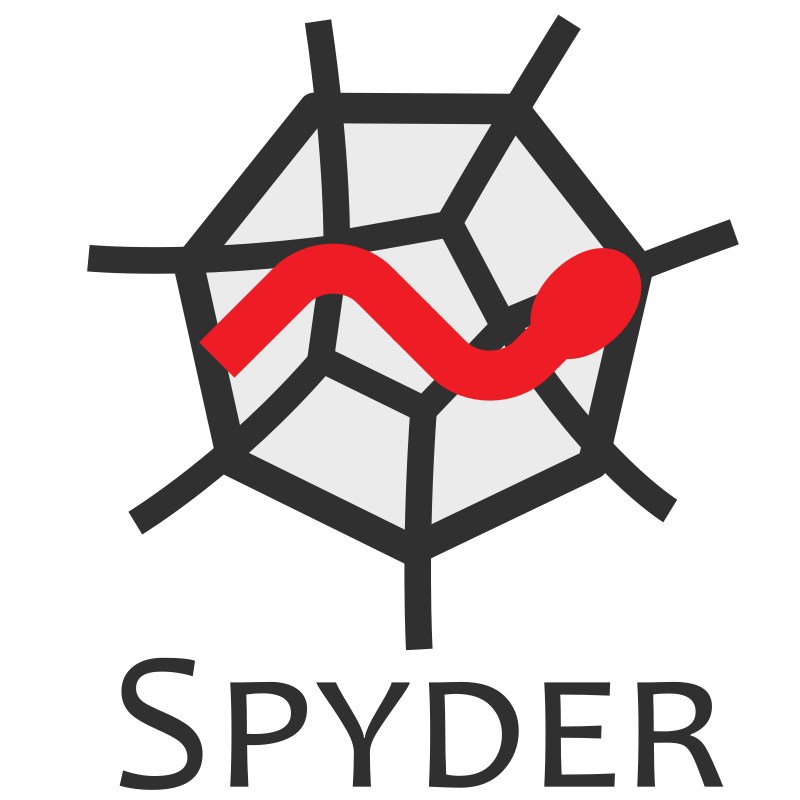

https://www.spyder-ide.org/
Spyder. The Scientific Python Development Environment
Spyder is a free and open source scientific environment written in Python, for Python, and designed by and for scientists, engineers and data analysts. It features a unique combination of the advanced editing, analysis, debugging, and profiling functionality of a comprehensive development tool with the data exploration, interactive execution, deep inspection, and beautiful visualization capabilities of a scientific package.
Debian Linux packages: spyder (Python 2), spyder3 (Python 3).
[Menu Programy|Programowanie|Spyder or Spyder3]
https://pypi.org/project/spyder/
pip install spyder [for experienced users, a virtual environment recommended]
Download with Anaconda.
Spyder is included by default in the Anaconda Python distribution.
Windows: standalone installer.
Spyder online with Binder in your web browser.